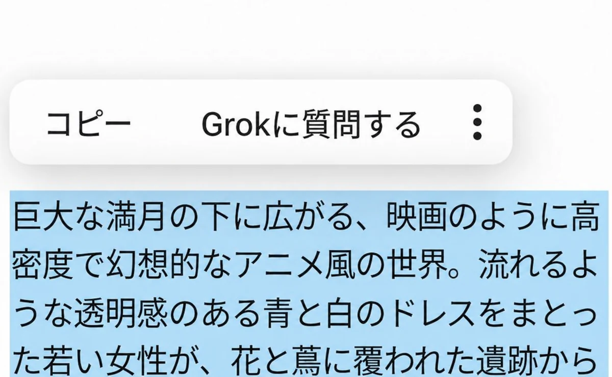
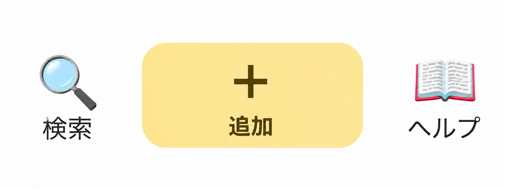
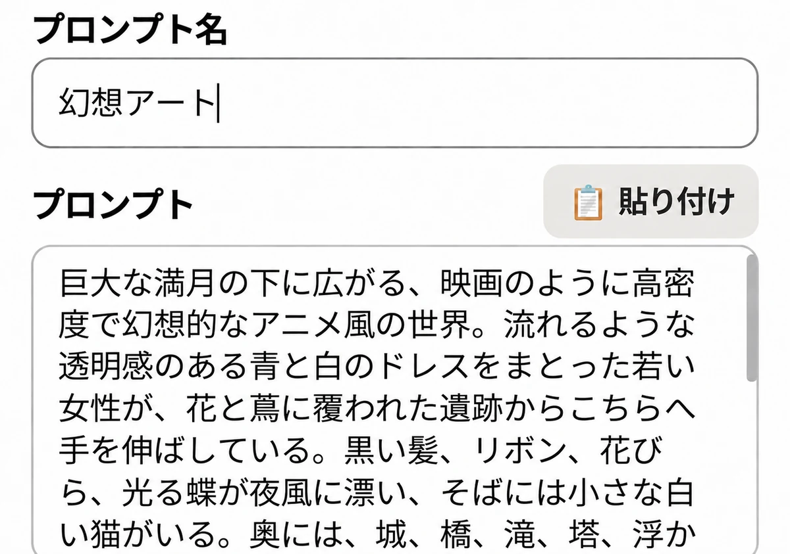
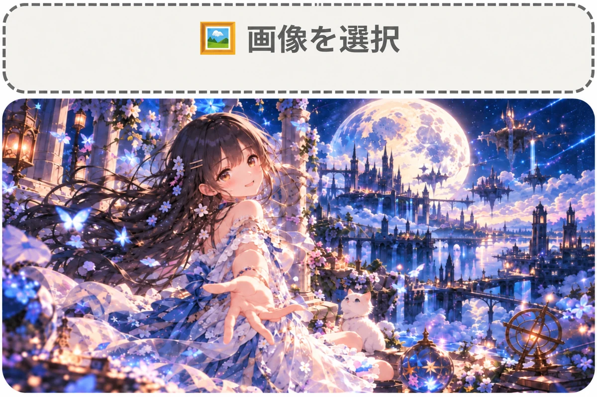
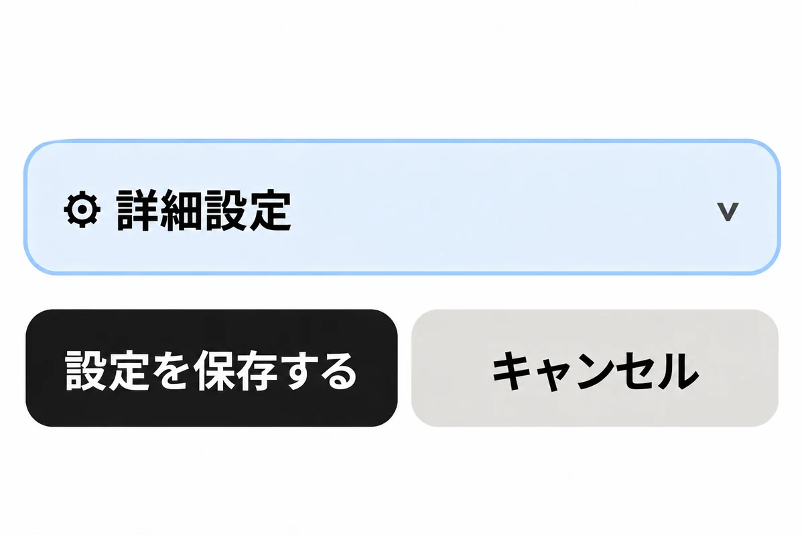
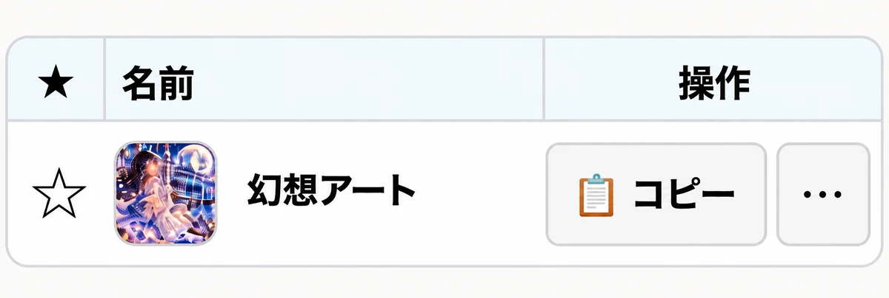

簡単に使い方を説明します。

まずはXなどで公開されているプロンプトの文字をコピーしましょう。

Prompt Pocketの一番下の［＋追加］を長押しします。

編集画面が開いてプロンプトが貼り付けられますので、このプロンプトに対してのタイトルを入力します。
再び公開ページに戻り、画像をコピーします。

［画像の選択］を長押しすると画像が挿入されます。

お好みで詳細設定をし、最後に［設定を保存］を押します。

メイン画面で、プロンプトカードが追加されています。
詳しい使い方はヘルプをご覧ください。